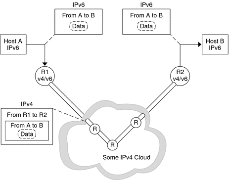
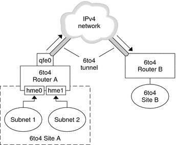
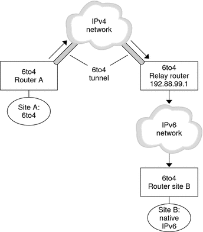

|
|||||||||||
|
1. Solaris TCPIP Protocol Suite (Overview) 2. Planning an IPv4 Addressing Scheme (Tasks 3. Planning an IPv6 Addressing Scheme (Overview) 4. Planning an IPv6 Network (Tasks) 5. Configuring TCP/IP Network Services and IPv4 Addressing (Tasks) 6. Administering Network Interfaces (Tasks) 7. Enabling IPv6 on a Network (Tasks) 8. Administering a TCP/IP Network (Tasks) 9. Troubleshooting Network Problems (Tasks) 10. TCP/IP and IPv4 in Depth (Reference) IPv6 Addressing Formats Beyond the Basics Solaris 10 IPv6 Implementation IPv6 Neighbor Discovery Protocol IPv6 Extensions to Solaris Name Services 12. About Solaris DHCP (Overview) 13. Planning for DHCP Service (Tasks) 14. Configuring the DHCP Service (Tasks) 15. Administering DHCP (Tasks) 16. Configuring and Administering DHCP Clients 17. Troubleshooting DHCP (Reference) 18. DHCP Commands and Files (Reference) 19. IP Security Architecture (Overview) 21. IP Security Architecture (Reference) 22. Internet Key Exchange (Overview) 24. Internet Key Exchange (Reference) 25. Solaris IP Filter (Overview) 28. Administering Mobile IP (Tasks) 29. Mobile IP Files and Commands (Reference) 30. Introducing IPMP (Overview) 31. Administering IPMP (Tasks) Part VI IP Quality of Service (IPQoS) 32. Introducing IPQoS (Overview) 33. Planning for an IPQoS-Enabled Network (Tasks) 34. Creating the IPQoS Configuration File (Tasks) 35. Starting and Maintaining IPQoS (Tasks) 36. Using Flow Accounting and Statistics Gathering (Tasks) |
IPv6 TunnelsTo minimize any dependencies at a dual-stack, IPv4/IPv6 site, all the routers in the path between two IPv6 nodes do not need to support IPv6. The mechanism that supports such a network configuration is called tunneling. Basically, IPv6 packets are placed inside IPv4 packets, which are then routed through the IPv4 routers. The following figure illustrates the tunneling mechanism through IPv4 routers, which are indicated in the figure by “R.” Figure 11-5 IPv6 Tunneling MechanismThe Solaris IPv6 implementation includes two types of tunneling mechanisms:
A configured tunnel is currently used on the Internet for other purposes, for example, on the MBONE, the IPv4 multicast backbone. Operationally, the tunnel consists of two routers that are configured to have a virtual point-to-point link between the two routers over the IPv4 network. This kind of tunnel is likely to be used on some parts of the Internet for the foreseeable future. Automatic tunnels require IPv4-compatible addresses. Automatic tunnels can be used to connect IPv6 nodes when IPv6 routers are not available. These tunnels can originate either on a dual-stack host or on a dual-stack router by configuring an automatic tunneling network interface. The tunnels always terminate on the dual-stack host. These tunnels work by dynamically determining the destination IPv4 address, which is the endpoint of the tunnel, by extracting the address from the IPv4-compatible destination address. Configured TunnelsTunneling interfaces have the following format: ip.tun ppa ppa is the physical point of attachment. At system startup, the tunneling module (tun) is pushed, by the ifconfig command, on top of IP to create a virtual interface. The push is accomplished by creating the appropriate hostname6.* file. For example, to create a tunnel to encapsulate IPv6 packets over an IPv4 network, IPv6 over IPv4, you would create the following file name: /etc/hostname6.ip.tun0 The content of this file is passed to ifconfig after the interfaces have been plumbed. The content becomes the parameters that are necessary to configure a point-to-point tunnel. Example 11-11 hostname6.ip.tun0 File for an IPv6 Over IPv4 TunnelThe following is an example of entries in the hostname6.ip.tun0 file: tsrc 10.10.10.23 tdst 172.16.7.19 up addif 2001:db8:3b4c:1:5678:5678::2 up In this example, the IPv4 source and destination addresses are used as tokens to autoconfigure IPv6 link-local addresses. These addresses are the source and destination for the ip.tun0 interface. Two interfaces are configured. The ip.tun0 interface is configured. A logical interface, ip.tun0:1, is also configured. The logical interface has the source and destination IPv6 addresses specified by the addif command. The contents of these configuration files are passed to ifconfig without change when the system is started in multiuser mode. The entries in Example 11-11 are equivalent to the following: # ifconfig ip.tun0 inet6 plumb # ifconfig ip.tun0 inet6 tsrc 10.0.0.23 tdst 172.16.7.19 up # ifconfig ip.tun0 inet6 addif 2001:db8:3b4c:1:5678:5678::2 up The following shows the output of ifconfig -a for this tunnel. ip.tun0: flags=2200850<UP,POINTOPOINT,RUNNING,MULTICAST,
NONUD,IPv6> mtu 1480 index 6
inet tunnel src 10.0.0.23 tunnel dst 172.16.7.19
inet6 fe80::c0a8:6417/10 --> fe80::c0a8:713
ip.tun0:1: flags=2200850<UP,POINTOPOINT,RUNNING,MULTICAST,NONUD,IPv6> mtu 1480
index 5
inet6 2001:db8:3b4c:1:5678:5678::2 You can configure more logical interfaces by adding lines to the configuration file by using the following syntax: addif IPv6-source IPv6-destination up Note - When either end of the tunnel is an IPv6 router that advertises one or more prefixes over the tunnel, you do not need addif commands in the tunnel configuration files. Only tsrc and tdst might be required because all other addresses are autoconfigured. In some situations, specific source and destination link-local addresses need to be manually configured for a particular tunnel. Change the first line of the configuration file to include these link-local addresses. The following line is an example: tsrc 10.0.0.23 tdst 172.16.7.19 fe80::1/10 fe80::2 up Notice that the source link-local address has a prefix length of 10. In this example, the ip.tun0 interface resembles the following: ip.tun0: flags=2200850<UP,POINTOPOINT,RUNNING,MULTICAST,NONUD,IPv6> mtu 1480
index 6
inet tunnel src 10.0.0.23 tunnel dst 172.16.7.19
inet6 fe80::1/10 --> fe80::2To create a tunnel to encapsulate IPv6 packets over an IPv6 network, IPv6 over IPv6, you create the following file name: /etc/hostname6.ip6.tun0Example 11-12 hostname6.ip6.tun0 File for an IPv6 over IPv6 Tunnel The following is an example of entries in the hostname6.ip6.tun0 file for IPv6 encapsulation over an IPv6 network: tsrc 2001:db8:3b4c:114:a00:20ff:fe72:668c
tdst 2001:db8:15fa:25:a00:20ff:fe9b:a1c3
fe80::4 fe80::61 upTo create a tunnel to encapsulate IPv4 packets over an IPv6 network, IPv4 over IPv6, you would create the following file name: /etc/hostname.ip6.tun0Example 11-13 hostname.ip6.tun0 File for an IPv4 Over IPv6 Tunnel The following is an example of entries in the hostname.ip6.tun0 file for IPv4 encapsulation over an IPv6 network: tsrc 2001:db8:3b4c:114:a00:20ff:fe72:668c
tdst 2001:db8:15fa:25:a00:20ff:fe9b:a1c3
10.0.0.4 10.0.0.61 upTo create a tunnel to encapsulate IPv4 packets over an IPv4 network, IPv4 over IPv4, you would create the following file name: /etc/hostname.ip.tun0Example 11-14 hostname.ip.tun0 for an IPv4 Over IPv4 Tunnel The following is an example of entries in the hostname.ip.tun0 file for IPv4 encapsulation over an IPv4 network: tsrc 172.16.86.158 tdst 192.168.86.122 10.0.0.4 10.0.0.61 up For specific information about tun, see the tun(7M) man page. For a general description of tunneling concepts during the transition to IPv6, see Overview of IPv6 Tunnels. For a description of procedures for configuring tunnels, see Tasks for Configuring Tunnels for IPv6 Support (Task Map). 6to4 Automatic TunnelsThe Solaris OS includes 6to4 tunnels as a preferred interim method for making the transition from IPv4 to IPv6 addressing. 6to4 tunnels enable isolated IPv6 sites to communicate across an automatic tunnel over an IPv4 network that does not support IPv6. To use 6to4 tunnels, you must configure a boundary router on your IPv6 network as one endpoint of the 6to4 automatic tunnel. Thereafter, the 6to4 router can participate in a tunnel to another 6to4 site, or, if required, to a native IPv6, non-6to4 site. This section provides reference materials on the following 6to4 topics:
More information about 6to4 routing is available from the following sources.
Topology of a 6to4 TunnelThe following figure shows a 6to4 tunnel between two 6to4 sites. Figure 11-6 Tunnel Between Two 6to4 SitesThe figure depicts two isolated 6to4 networks, Site A and Site B. Each site has configured a router with an external connection to an IPv4 network. A 6to4 tunnel across the IPv4 network connects the 6to4 sites. Before an IPv6 site can become a 6to4 site, you must configure at least one router interface for 6to4 support. This interface must provide the external connection to the IPv4 network. The address that you configure on qfe0 must be globally unique. In this figure, boundary Router A's interface qfe0 connects Site A to the IPv4 network. Interface qfe0 must already be configured with an IPv4 address before you can configure qfe0 as a 6to4 pseudo-interface. In the figure, 6to4 Site A is composed of two subnets, which are connected to interfaces hme0 and hme1 on Router A. All IPv6 hosts on either subnet of Site A automatically reconfigure with 6to4-derived addresses on receipt of the advertisement from Router A. Site B is the opposite endpoint of the tunnel from Site A. To correctly receive traffic from Site A, a boundary router on Site B must be configured for 6to4 support. Otherwise, packets that the router receives from Site A are not recognized and dropped. Packet Flow Through the 6to4 TunnelThis section describes the path of packets from a host at one 6to4 site to a host in a remote 6to4 site. This scenario uses the topology that is shown in Figure 11-6. Moreover, the scenario assumes that the 6to4 routers and 6to4 hosts are already configured.
Considerations for Tunnels to a 6to4 Relay Router6to4 relay routers function as endpoints for tunnels from 6to4 routers that need to communicate with native IPv6, non-6to4 networks. Relay routers are essentially bridges between the 6to4 site and native IPv6 sites. Because this solution is very insecure, by default, the Solaris OS does not enable 6to4 relay router support. However, if your site requires such a tunnel, you use the 6to4relay command to enable the following tunneling scenario. Figure 11-7 Tunnel From a 6to4 Site to a 6to4 Relay RouterIn Figure 11-7, 6to4 Site A needs to communicate with a node at the native IPv6 Site B. The figure shows the path of traffic from Site A onto a 6to4 tunnel over an IPv4 network. The tunnel has 6to4 Router A and a 6to4 relay router as its endpoints. Beyond the 6to4 relay router is the IPv6 network, to which IPv6 Site B is connected. Packet Flow Between a 6to4 Site and Native IPv6 SiteThis section describes the flow of packets from a 6to4 site to a native IPv6 site. The text uses the scenario that is shown in Figure 11-7 as an example.
|
||||||||||
|